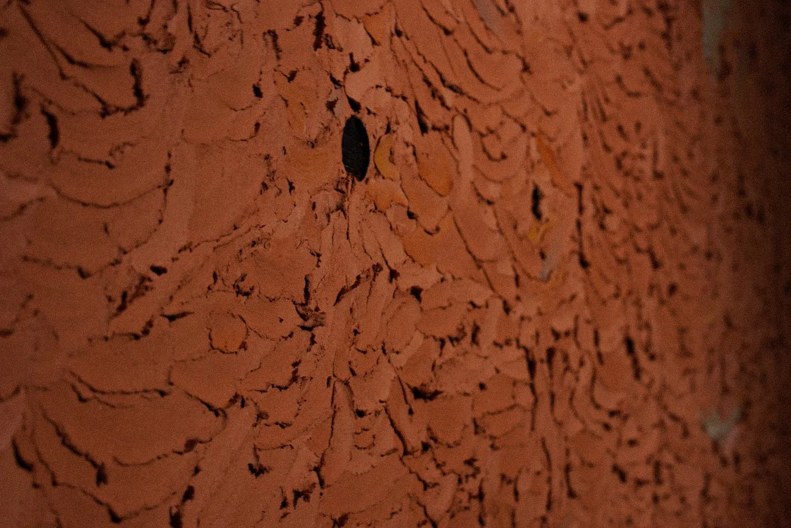
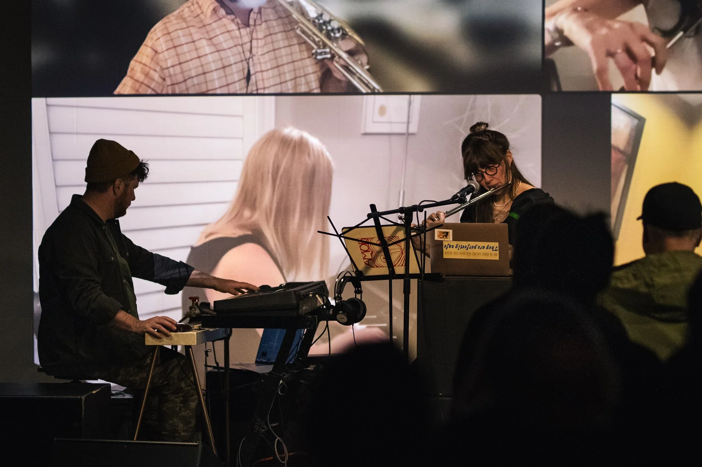
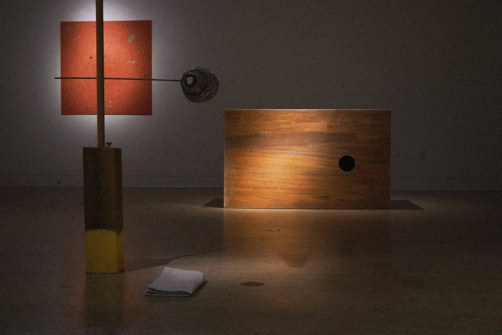
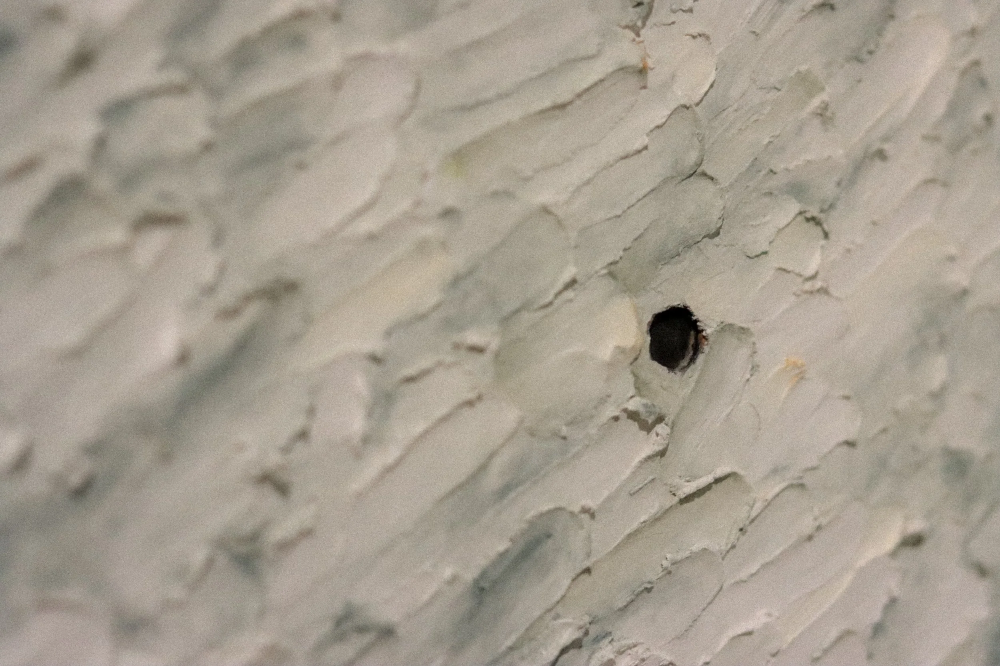
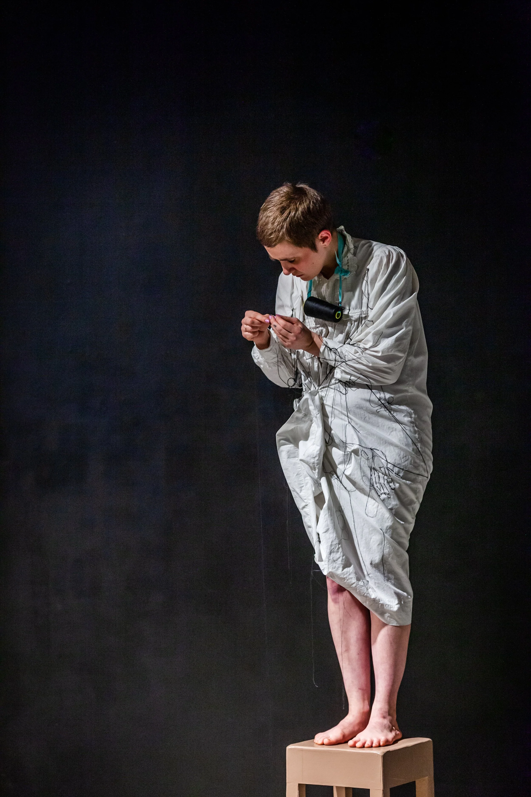
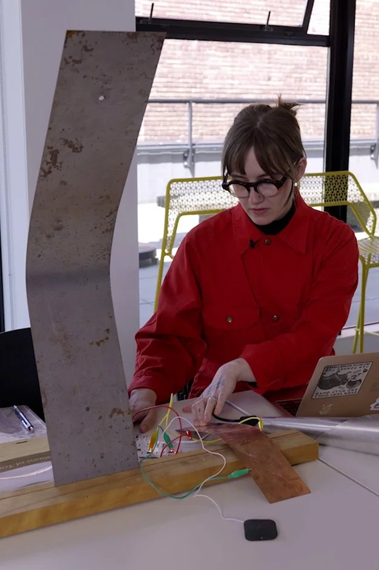
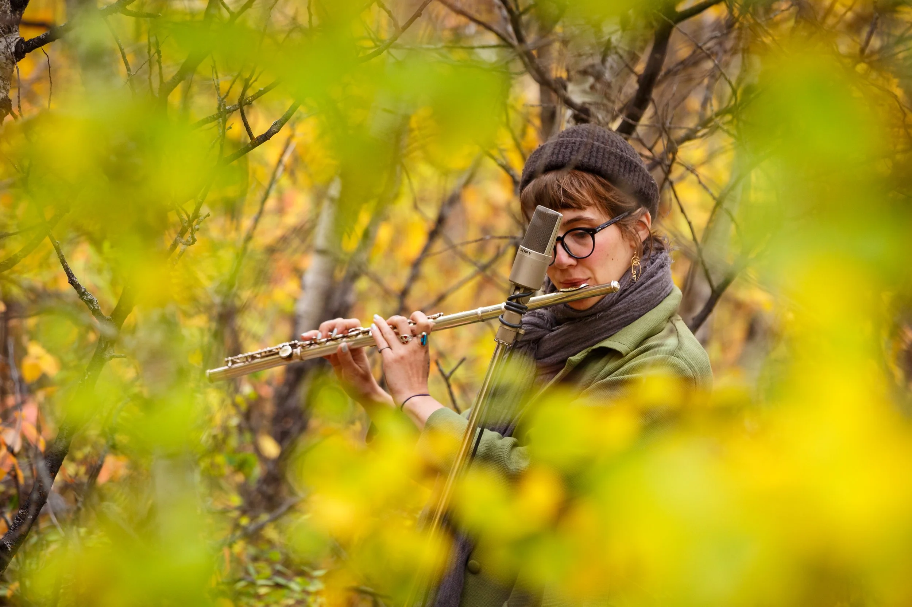
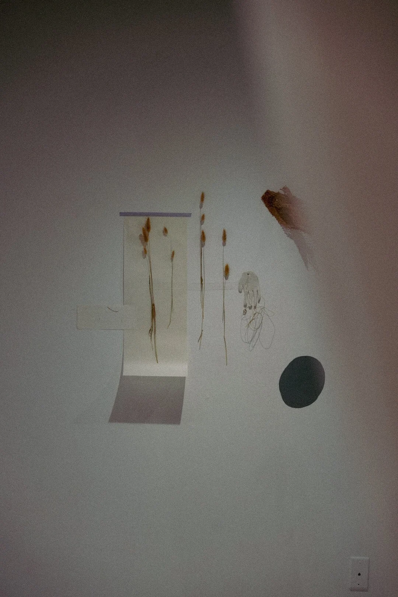
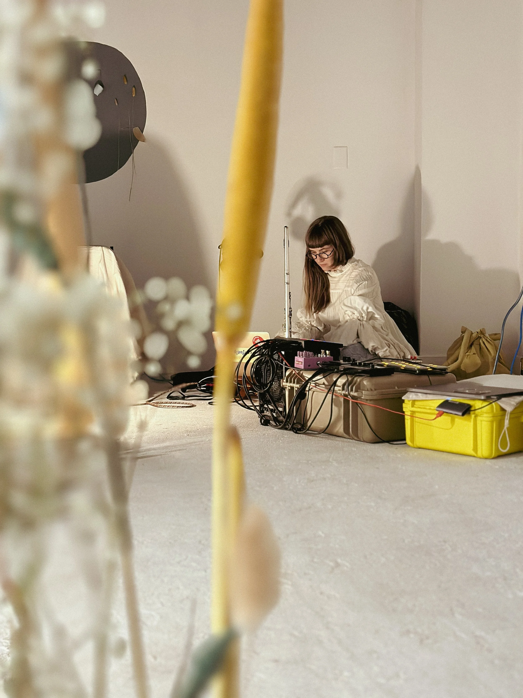
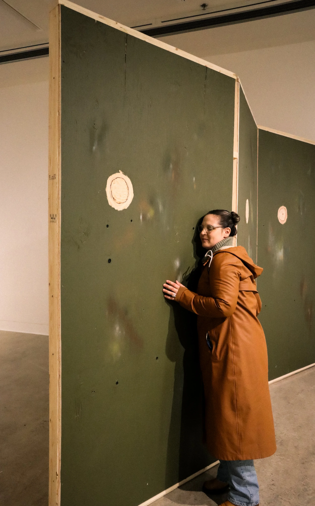

Bio
Edie is deeply inter-disciplinary – they are an artist, composer, and researcher working primarily within sound, sculpture, and aesthetics. They are interested in the temporary architectures of exhibition sites, thinking through spaces that are rooted in consent and hospitality which can generate new desire paths. Their practice is rooted in deep-noticing/listening, ecology, improvisation, granulation, critical approaches to field recording, and material practice. They often use sound as sculpture and materials as dense poetics to contemplate gestures of embodied time. They are fascinated by labyrinths, translation, states of near-dreaming, desire paths, recursion/repetition, and the physical mapping of duration.
Edie is from Treaties 6, Saskatoon, Saskatchewan. They are currently based on unceded lekʼeŋen Traditional Territory – also known as Victoria, BC, where they are an MFA candidate at the University of Victoria. They previously studied at the University of Regina, Saskatchewan, receiving a BA in Philosophy (ethics - honours) and a BFA in Visual Art – Printmaking (with distinction).
They are 1/3 of the experimental sound trio Bell Dreams - playing the flute, piccolo, clarinet, found objects, electronics, and vocals. They are also a part of the ⚧ Ensemble guided and organized by composer, Megan Harton. In addition, they are a prior member of the Saskatoon Experimental Music Ensemble – which focuses on shared composition, collaboration, and improvisation. They are a member of the Unheard Sound Collective which runs the bi-annual SoundsLike festival - an experimental sound series in Saskatoon.
Rubinoff Tour; 2025
Video: Nick Patterson
Sound: Edie Skeard
Rubinoff Sculpture Park – Hornby, BC
Performance Documentation Sound of The Sun iii
Unit/Pitt Gallery – Vancouver, BC
September, 2024
Listen
Recent sound-based compositions + performances








